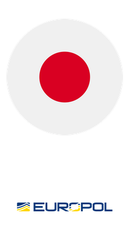

LOCKBIT
THIS ARCHIVE IS OVERSEEN AND UPDATED
BY BUGZORC UNTIL FEBRUARY 24TH 2024.
CHECK GITHUB FOR THE LATEST ARCHIVE.

Japanese LockBit Recovery Tool
The Japanese Police, supported by Europol, have developed a recovery tool, designed to recover files encrypted by the LockBit 3.0 Black Ransomware.
In order for this recovery solution to work, you are required to run this binary file on your infected machine. This will run a first assessment on your machine.
In order to produce this tool, the Japanese Police has concentrated a great deal of technical expertise to reveal the structure of the encryption based on reverse engineering forensics for more than three months. This solution has been tested internally and important effort have been made to make it available during the joint operation CRONOS.
Supporting the technical efforts of the NPA, Europol provided experts to adapt this solution to the “NoMoreRansom” project. This website is available in 37 languages and now contains more than 120 solutions capable of decrypting 150+ different types of ransomware. So far, more than 6 million victims across the globe have benefited from this project.
Link:
Uploaded: 26 Jan, 2024 13:21 UTC
Updated: 26 Jan, 2024 13:21 UTC